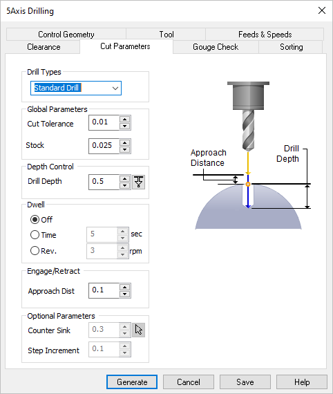
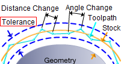
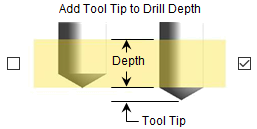

The following dialog allows you to set the Cut Parameters for Drilling operations. You can set the Drill Type, Depth Control, Location, Dwell and other Optional Parameters via this dialog box.
 Dialog Box: Cut Parameters tab, 5 Axis Drilling |
|
||||||
Cut Tolerance Cut Tolerance is allowable deviations (tolerances) from the actual part geometry plus the Stock layer (if any).  5 Axis Tolerance Stock Stock (Roughing Operations Only) - This is the layer of material that will remain around the part after the toolpath is completed. Generally Roughing operations leave a thin layer of stock, unlike finishing operations where this value is usually set to zero. |
Drill depth refers to the hole depth. It needs to be specified for Standard, Deep and Breakchip drilling. Selecting Add Tool Tip to Drill depth is used to drill through holes where the height of the tool taper is computed and added to the drill depth.  Add Tool Tip to Drill Depth You can determine the Depth by selecting the Pick icon and then pick two points on your part. The Depth value will be calculated automatically and added to the dialog. |
Dwell is an optional parameter that allows a machine delay of either Time (sec) Rev (rpm) of the spindle. |
You can define the Approach Distance under Engage/Retract. The tool rapids in Z axis to the approach plane and applies the specified feedrate from the approach plane to the specified depth to perform the cycle. |
The following additional parameters are supported: Counter Sink Dia. Required only for the Counter Sink Drill Type operation. The system will automatically calculate the drill depth. Optionally, you can use the pick button to select a circle to define the diameter of the Counter Sink. Step Increment Used to set the peck increment tool. This needs to be specified for Deep and Breakchip drilling. The tool retracts after each step increment completely to clean out all the chips. |